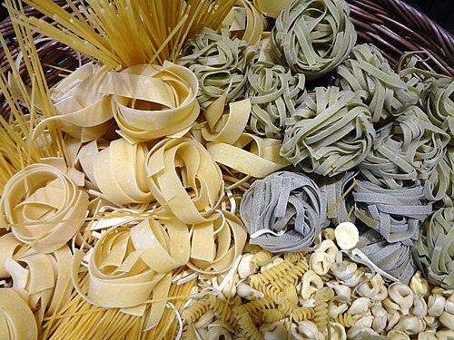

Pasta
The absolute staple of Italy - Pasta! Spaghetti! These floury delicacies are meant to be slurped up and enjoyed to the heart's content!
The saying goes that Marco Polo brought pasta on his journeys to and from China in the 13th century, but it turns out that this is incorrect! (Trafalgar.com, 2022)
Pasta has been around before Marco Polo was born, after all.
References:
html list code in this commit adapted from this site:
https://www.w3schools.com/
Birtles K. (2022) "A brief history of Italy's long-standing love affair with pasta". Available at: https://www.trafalgar.com/real-word/history-pasta/. (Accessed: 30th April 2025).
Wikipedia (2025) "Pasta". Available at: https://en.wikipedia.org/wiki/Pasta. (Accessed: 30th April 2025).
Stein E. (2022) "The secret behind Italy’s rarest pasta". Available at: https://www.bbc.com/travel/article/20161014-the-secret-behind-italys-rarest-pasta. (Accessed: 30th April 2025).